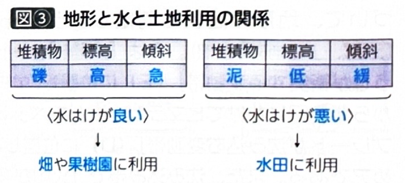

第1章 地形・地形図 - 堆積平野
ポイント総復習
1. 堆積平野と「水」の関係
地形と人間の暮らし（土地利用など）の関わりを理解する最大のポイントは「地形と水の関係（水はけ）」です。
| 条件 | 水はけが良い | 水はけが悪い（水持ちが良い） |
|---|---|---|
| 堆積物の粒径 | 大きい（礫や砂） | 小さい（泥・粘土） |
| 標高・傾斜 | 高い・急 | 低い・緩やか |
| 農業的土地利用 | 畑・果樹園 | 水田 |

2. 沖積平野の地形と土地利用
完新世（約1万年前〜現在）に河川の堆積作用によって形成された平野を沖積平野といい、上流から順に以下の地形が形成されます。
① 扇状地（谷口〜）
- 河川が山地から平野に出る谷口に、砂礫（されき）が扇状に堆積した水はけの良い地形。
- 扇央：水が地下に浸透し伏流するため、地表は水無川となる。水が得にくく畑や果樹園に利用される。
- 扇端：地下水が地表に湧き出す湧水帯。水が得やすいため古くからの集落や水田が分布する。
② 氾濫原（中・下流域）
- 河川が蛇行し、氾濫による土砂の堆積で形成される。
- 自然堤防：流路沿いに砂が堆積した微高地。水害を避けやすいため古くから集落や畑に利用されてきた。
- 後背湿地：自然堤防の背後に泥が堆積した低湿地。水はけが悪く主に水田として利用される。（※現在は住宅地化も進行）
- 三日月湖（河跡湖）：蛇行した河川のかつての流路が取り残されてできた湖。
③ 三角州（デルタ）（河口部）
- 河口部に細粒の砂や泥が堆積して形成。低平で水はけが悪く水田利用が多いが、海沿いで交易に有利なため都市化も進みやすい。
- 形状：鳥趾状（ミシシッピ川）、円弧状（ナイル川）、カスプ状（テヴェレ川）など。

3. 台地と河岸段丘
周囲より一段高い平坦面をもった地形で、水害を避けやすい特徴があります。
- 台地：更新世（完新世の前）に形成された平野が隆起してできたもの。
- 台地上：水を得にくいため古くは畑や果樹園。近年は住宅地（ニュータウン）や工業団地として開発されたが、オールドタウン化も問題となっている。
- 崖下：湧水を得やすいため、古くからの集落が立地する。
- 河岸段丘：山間部の谷底平野などが、河川の下方侵食と地形の隆起を繰り返すことで形成された階段状の地形。平坦な段丘面は集落や耕地に利用される。

基礎問題（理解度チェック）
Q1. 堆積平野の土地利用と「水」の関係について、空欄を埋めなさい。
堆積平野の土地利用は「水はけ」に大きく左右される。堆積物の粒径が大きい
や、標高が高い場所、傾斜が急な場所は水はけが
ため、主に
に利用される。逆に、泥が堆積した低く平らな場所は水はけが
ため、主に
に利用される。
Q2. 扇状地において、扇央部は水が地下に浸透して伏流するため水が得にくく古くから集落が発達したが、扇端部は湧水帯となっているため主に畑や果樹園として利用されてきた。
Q3. 氾濫原の地形と土地利用について、空欄を埋めなさい。
河川の中・下流域に広がる氾濫原では、河川の氾濫によって流路沿いに砂が堆積して微高地である
が形成される。ここは水害を避けやすいため、古くから
に利用されてきた。一方、その背後にある泥が堆積した低湿地を
といい、水はけが悪いため主に
として利用されてきた。また、蛇行した河川のかつての流路が取り残された湖を
という。
Q4. 河口部に形成される三角州（デルタ）は様々な形状になる。たとえばアメリカのミシシッピ川の河口は「円弧状」、エジプトのナイル川の河口は「鳥趾（ちょうし）状」の三角州となっている。
Q5. 台地と河岸段丘について、空欄を埋めなさい。
日本の平野の周囲にみられる一段高い平坦面をもつ地形を
という。この地形の上の部分は水が得にくいため古くから畑や果樹園として利用され、集落は水を得やすい
に立地した。また、山間部などで河川の下方侵食と地形の
が繰り返されることで形成された階段状の地形を
といい、平坦な部分は集落や耕地に利用される。